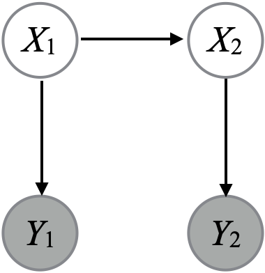

Representative example of questions to prep for Quiz 1.
Important note
The quiz will not focus on multiple choice questions—we use mostly multiple choice in this page just to make it easier to pace the questions during the lecture.
But try to answer before looking at the possible choices to get a more realistic practice!
SNIS
Consider the following partial code for simPPLe’s SNIS engine:
You would like to answer the question: is \(\theta_1\) “clearly different” than \(\theta_2\)? To be concrete, let’s say that “clearly different” means their value differs by at least \(0.1\).
How would you provide a Bayesian answer to the above question?
Consider the small HMM on the right defined on binary random variables.

Each edge from a parent random variable to a child in the HMM’s graphical model work the same way: the value of the child is the same as the parent with probability \(2/3\), and it is flipped with probability \(1/3\). The distribution of \(X_1\) is \({\mathrm{Bern}}(1/2)\). Mathematically: \[\begin{align*}
X_1 &\sim {\mathrm{Bern}}(1/2) \\
X_2 | X_1 &\sim {\mathrm{Bern}}((2/3)X_1 + (1/3)(1-X_1)) \\
Y_i | X_i &\sim {\mathrm{Bern}}((2/3)X_i + (1/3)(1-X_i)).
\end{align*}\]
Denote the observations by \(y_i\) where \(i\) is the number of months since January 2005, and \(y_i\) is the number of sun spots observed that month.
Design a Bayesian model to predict the number of sun spots in the next decade. Describe it using the “~” notation. To help you, the following table will be provided during the quiz:
Name
Abbreviation
Parameters
Bernoulli
\({\mathrm{Bern}}(p)\)
Success probability \(p \in [0, 1]\)
Binomial
\({\mathrm{Binom}}(n, p)\)
Number of trials \(n \in \mathbb{N}\), success probability \(p \in [0, 1]\)
Uniform
\({\mathrm{Unif}}(a, b)\)
Left and right bounds, \(a < b\)
Normal
\(\mathcal{N}(\mu, \sigma)\)
Mean \(\mu \in \mathbb{R}\) and standard deviation \(\sigma > 0\)
Exponential
\({\mathrm{Exp}}(\lambda)\)
Rate \(\lambda\) (\(=1/\)mean)
Beta
\({\mathrm{Beta}}(\alpha, \beta)\)
Shape parameters \(\alpha > 0\) and \(\beta > 0\)
Also describe at least one potential source of model mis-specification.
Click for answer
Several possible answers are possible, here is an example:
Many answers possible for model mis-specification. For example, the Poisson distribution will force the mean and variance to be equal, which often does not hold in practice (in this specific example, this might be especially problematic for values \(i\) where \(\sin(\theta_2 i + \theta_3) + 1\) is zero or close to zero).
PPL-based prediction
Recall the model covered in class to perform Bayesian linear regression on galaxy distances and velocities:
Let \(x\) denote a parameter of interest. The true value is \(x^*\). We have a Bayesian model with \(X\) and \(Y\), and we approximate the posterior mean using SNIS. Let \(\hat G_M\) denote the output of SNIS with test function \(g(x) = x\) and \(M\) iterations.
Where does the following limit converge to? \[\lim_{M\to\infty} \hat G_M = \;?\]
Recall that a binomial likelihood has the following PMF: \[p(y | \theta) = \binom{n}{y} \theta^y (1-\theta)^{n-y},\] where \(n\) is the observed number of trials (e.g. launches) and \(y\) is the number of observed successes.
We place a Beta prior on \(\theta\), with hyper-parameters \(\alpha = 1\) and \(\beta = 2\). Recall that beta densities have the following form: \[b_{\alpha, \beta}(\theta) = \frac{1}{Z(\alpha, \beta)} \theta^{\alpha - 1} (1-\theta)^{\beta - 1},\] where \(Z(\alpha, \beta)\) is a normalization constant (i.e. \(Z(\alpha, \beta)\) depends on \(\alpha, \beta\) but not \(\theta\)).
Show that the posterior on \(\theta\) given that we observed 3 successful launches out of 3 (\(y = 3, n = 3\)) has a beta density, i.e., that \[f_{\theta|Y = 3}(\theta) = b_{\alpha', \beta'}(\theta),\] for some \(\alpha', \beta'\).
In our example here, \(\alpha = 1\), \(\beta = 2\), \(y = 3, n = 3\), so \(\alpha' = 1 + 3 = 4\) and \(\beta' = 2 + (3-3) = 2\).
Credible intervals
You computed two credible intervals based on the same continuous, unimodal posterior distribution: one is a 90% quantile-based interval, the other, a highest density interval (HDI). Which of the intervals is shortest?
Hence the action that minimizes the loss is \(a = 1\), i.e. to use the treatment.
Posterior expectation
A discrete random variable \(X\) can take values \(-1, 2, 5\). Suppose its posterior PMF given \(Y\) is proportional to: \[\gamma \propto (0.2, 0.1, 0.2).\] Compute \(\mathbb{E}[X^2 | Y]\).
Click for choices
56/5 = 11.2
23/25 = 0.92
19/25 = 0.76
17/25 = 0.68
None of the above.
Click for answer
We first compute \(\pi\) by normalization: \[\pi = \frac{\gamma}{0.2 + 0.1 + 0.2} = (2/5, 1/5, 2/5).\]
We can then compute the conditional expectation using LOTUS: \[\mathbb{E}[X^2 | Y] = (-1)^2 (2/5) + 2^2 (1/5) + 5^2 (2/5) = 56/5.\]
Derive the Bayes estimator for the loss \(L(a, x) = x^2 - 10ax + a^2\). The posterior mean is \(\mathbb{E}[X | Y = y] = 1\) and \(\operatorname{Var}[X | Y = y] = 1\).
\[
\begin{aligned}
\delta_{\text{B}}(Y) &= \operatorname{arg\,min}\{ \mathbb{E}[L(a, X) | Y] : a \in A \} \\
&= \operatorname{arg\,min}\{ \mathbb{E}[ X^2 - 10aX + a^2 | Y] : a \in A \} \\
&= \operatorname{arg\,min}\{ - 10 a\mathbb{E}[X | Y] + a^2: a \in A \}.
\end{aligned}
\]
Computing the derivative with respect to \(a\) and setting to zero: \[-10 \mathbb{E}[X | Y] + 2a = 0,\] hence the Bayes estimate or Bayes action is \(a = 10\mathbb{E}[X | Y] / 2 = 5\).
Notation
Which of the following statement(s), if any, follow(s) the notation used in class (i.e., make sense)?
\(\mathbb{P}(X) \in [0, 1]\), where \(\mathbb{P}\) is a probability function and \(X\) is a random variable.
\(p(x) \in [0, 1]\), where \(p\) is a PMF and \(x\) is a realization.
\(\mathbb{P}(x) \in [0, 1]\), where \(\mathbb{P}\) is a PMF, and \(x\) is a realization.
\((X = 1) \subset S\), where \(X\) is a random variable and \(S\) is the sample space.
\(\mathbb{E}[X + x] = \mathbb{E}[X] + x\), where \(x\) is a realization
\(f(x) \in [0, 1]\), where \(f\) is a density.
Click for choices
d, e, f
a, b, d, e, f
a, b, d, e
b, d, e
None of the above.
Click for answer
Correct choice is: b, d, e
a, c are incorrect since \(\mathbb{P}\) takes events as input, and \(\mathbb{P}\) is not a PMF but a probability function.
f is incorrect since a density can be greater than one.
Optimality of Bayes estimator
State the theoretical guarantee that a Bayes estimator \(\delta_{\text{B}}\) has compared to another estimator \(\delta_{\text{o}}\) in terms of average loss.